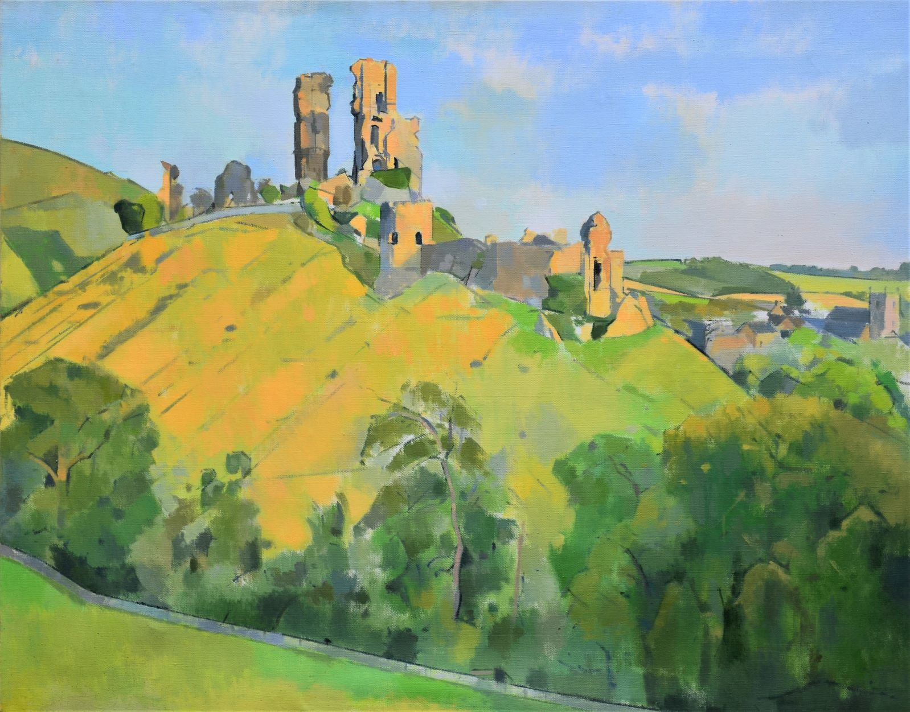

About Me
My name is Robert Amesbury Brooks, and I am part of a group of artists known as the Arborealists. I studied at the Slade School of Fine Art in London.
Focusing and being truthful to one’s own integrity in art brings much into the drama and beauty of an original artwork. My method was developed and inspired through my tutor Patrick George, who helped me to focus my ideas; as well as one of my muses Cezanne; who’s sheer and direct work got straight to the point of shape and colour, which has influenced my work massively.
Through my early career in the 80’s my style and progression has developed, initially from a somewhat naïve perspective, I have channelled my efforts into simplicity, drawing out the natural beauty seen from the eyes perspective.
Not always knowing where to start on a picture can often pose a challenge, but bringing everything together, be it in whatever medium or subject I find myself drawn to; this challenge is frequently what gives me much enthusiasm towards my main pursuit.
Why I paint trees?

I love the shape, the twists, and turns, the nodules, every crack, and crevasse. Limbs reaching out for life. Their energy, the power, the movement they convey, and the way they are naturally big structures. Their changeableness giving a message both fresh and organic. Greenish hues to autumnal yellows and browns resonating with the changing seasons. Stoic, they stand proud and glorious. Light shimmering to awaken each leaf. Skeletons which defy winters call.
You simply cannot ignore them, they are a part of our everyday life, our existence. Timeless capsules, the older a tree gets the more beautiful it looks, from a mere sapling to a majestic wisened mount. A force of the earth and arbiter of the landscape. The character to me of an ancient oak tree is that of a large fortress, monumental in its sheer reach through both time and space. Conveying with it a warmth and happiness which of itself brings both enchantment and wonder, and to me escape. If trees could talk, what words would they tell us?
Corfe Castle
After completing my Studies at the Slade School of Fine Art in London I moved back down South to my birthplace, to paint the Dorset landscape. For over twenty years I have painted Corfe Castle from every conceivable angle, never growing weary of painting it.
Invaded by Oliver Cromwell and the Roundheads the walls and battlements were besieged and bombarded with cannon fire. Today only remnants remain, these ruins having amassed a beautiful elegant structure, the two main columns imposing a strong authority. The destructive nature of cannon fire has sculpted the stone walls and towers producing more organic shapes that have settled in their habitat, lying where they fell. Jagged stone made smooth through centuries of English weather.
Corfe Castle to me is a celebration not just because of its historical presence but also through its significant monumental order within its landscape of surrounding village and hillsides. From all observational points you are struck with awe and wonderment. An idea I have aimed to convey from greater distances; incorporating the enfolding Purbeck landscape of rolling hills and trees, to closer more personal compositions.
Colour too plays a huge role especially combinations of warm and cool colour relationships playing off of one another. The greyish local Purbeck stone set harmoniously against a back drop of vibrant greens and cool blues. A palette as varied and changeable as the seasons this poses a challenge which I feel is part of the beauty of painting.
Is there any clear way of seeing or understanding anything fully of which we look at, for so long I have battled with this idea? There is so much to think about when painting, but having a clear idea with positive aims always inspires and bring positive results. To me Corfe Castle has always been this source of inspiration.